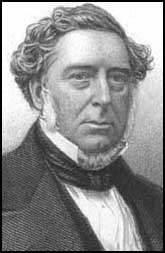

Thomas Newcomen was a lay preacher and a teaching elder in the local Baptist church.
After 1710 he became the pastor of a local group of Baptists. His father had
been one of a group who brought the well-known Puritan John Flavel to Dartmouth.
Later one of Newcomen's business contacts in London, Edward Wallin, was another
Baptist minister who had connections with the well known Doctor John Gill of
Horsleydown, Southwark. Newcomen's connection with the Baptist church at
Bromsgrove materially aided the spread of his steam engine, as Jonathan
Hornblower (both father and son) were involved in the same church.
Newcomen's great achievement
was his steam engine, developed around 1712, combining the ideas of Thomas
Savery and Denis Papin he created a steam engine for the purpose of lifting
water out of a tin mine.It is likely that Newcomen was already acquainted with
Savery, whose forebears were merchants in south Devon. Savery also had a post
with the Commissioners for Sick and Hurt Seamen, which took him to Dartmouth.
Savery had devised a "fire engine", a kind of thermic syphon, in which steam was
admitted to an empty container and then condensed. The vacuum thus created was
used to suck water from the sump at the bottom of the mine. The "fire engine"
was not very effective and could not work beyond a limited depth of around
thirty feet.
Newcomen replaced the
receiving vessel (where the steam was condensed) with a cylinder containing a
piston based on Papin's design. Instead of the vacuum drawing in water, it drew
down the piston. This was used to work a beam engine, in which a large wooden
beam rocked upon a central fulcrum. On the other side of the beam was a chain
attached to a pump at the base of the mine. As the steam cylinder was refilled
with steam, readying it for the next power stroke, water was drawn into the pump
cylinder and expelled into a pipe to the surface by the weight of the machinery.
Newcomen and his partner John Calley built the first successful engine of this
type at the Conygree Coalworks near Dudley in the West Midlands. A working
replica of this engine can be seen at the Black Country Living Museum nearby.
Comparatively little is
known of Newcomen's later life. After 1715 the engine affairs were conducted
through an unincorporated company, the 'Proprietors of the Invention for Raising
Water by Fire'. Its secretary and treasurer was John Meres, clerk to the Society
of Apothecaries in London. That society formed a company which had a monopoly on
supplying medicines to the Navy providing a close link with Savery, whose will
he witnessed. The Committee of the Proprietors also included Edward Wallin, a
Baptist of Swedish descent; and pastor of a church at Maze Pond, Southwark.
Newcomen died at Wallin's house in 1729, and was buried at Bunhill Fields burial
ground on the outskirts of the City of London: the exact site of his grave is
unknown.
By 1733 about 125 Newcomen
engines, operating under Savery's patent (extended by statute so that it did not
expire until 1733), had been installed by Newcomen and others in most of the
important mining districts of Britain and on the Continent of Europe: draining
coal mines in the Black Country, Warwickshire and near Newcastle upon Tyne; at
tin and copper mines in Cornwall; and in lead mines in Flintshire and
Derbyshire, amongst other places.
The Newcomen engine held its
place without material change for about 75 years, spreading gradually to more
areas of the UK and mainland Europe. At first brass cylinders were used, but
these were expensive and limited in size. New iron casting techniques pioneered
by the Coalbrookdale Company in the 1720s allowed bigger cylinders to be used,
up to about 6 feet (1.8 m) in diameter by the 1760s. Experience led to better
construction and minor refinements in layout. Its mechanical details were much
improved by John Smeaton, who built many large engines of this type in the early
1770s; his improvements were rapidly adopted. By 1775 about 600 Newcomen engines
had been built, although many of these had worn out before then, and been
abandoned or replaced.
The Newcomen Engine was by
no means an efficient machine, although it was probably as complicated as
engineering and materials techniques of the early 18th century could support.
Much heat was lost when condensing the steam, as this cooled the cylinder. This
did not matter unduly at a colliery, where unsaleable small coal (slack) was
available, but significantly increased the mining costs where coal was not
readily available, as in Cornwall. Newcomen's engine was gradually replaced
after 1775 in areas where coal was expensive (especially in Cornwall) by an
improved design, invented by James Watt, in which the steam was condensed in a
separate condenser. The Watt steam engine, aided by better engineering
techniques including Wilkinson's boring machine, was much more fuel efficient,
enabling Watt and his partner Matthew Boulton to collect substantial royalties
based on the fuel saved.
Watt subsequently made other
improvements, including the double-acting engine, where both the up and down
strokes were power strokes. These were especially suitable for driving textile
mills, and many Watt engines were employed in these industries. At first
attempts to drive machinery by Newcomen engines had mixed success, as the single
power stroke produced a jerky motion, but use of flywheels and better
engineering largely overcame these problems. By 1800, hundreds of non-Watt
rotary engines had been built, especially in collieries and ironworks where
irregular motion was not a problem but also in textile mills.
Despite Watt's improvements,
Common Engines (as they were then known) remained in use for a considerable
time, and many more Newcomen engines than Watt ones were built even during the
period of Watt's patent (up to 1800), as they were cheaper and less complicated.
Of over 2,200 engines built in the 18th century, only about 450 were Watt
engines. Elements of Watt's design, especially the Separate Condenser, were
incorporated in many "pirate" engines. Even after 1800 Newcomen type engines
continued to be built and condensers were added routinely to these. They were
also commonly retro-fitted to existing Newcomen engines (the so-called
"pickle-pot" condenser).